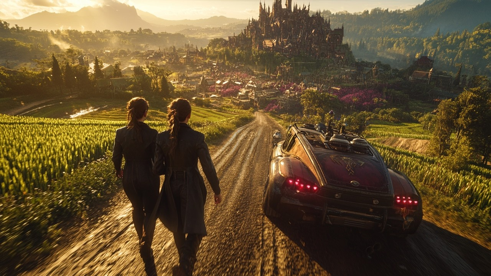

Программирование

Пишу код на C++ и изучаю веб-разработку. Могу сидеть за задачей часами.
В свободное время я занимаюсь несколькими вещами, которые приносят мне удовольствие.
Пишу код на C++ и изучаю веб-разработку. Могу сидеть за задачей часами.
Хожу в спортзал и бегаю по утрам, это помогает держать себя в форме.

Люблю компьютерные игры, особенно командные, где важна тактика.